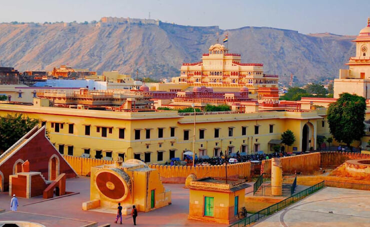

Hawa Mahal, Jaipur
Built by: Maharaja Sawai Pratap Singh
Built in: 1799
 The Hawa Mahal also known as the Palace of The Winds is located in the heart of the Pink City of India Jaipur.
it is a five-storey palace that belongs to the Kachhwaha Rajput dynasty.
The Hawa Mahal also known as the Palace of The Winds is located in the heart of the Pink City of India Jaipur.
it is a five-storey palace that belongs to the Kachhwaha Rajput dynasty.
Jantar Mantar, Jaipur
Built In : 18th century
Built by:the Rajput king Sawai Jai Singh
